以“system”用户创建连接成功后，提供创建用户功能，选中“用户”节点，右键单击弹出如下菜单：
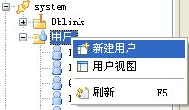
单击新建用户出现如下图对话框：
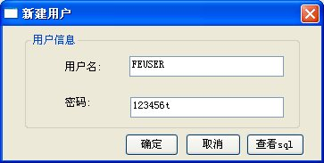
填写用户名和密码，点击确定按钮成功创建用户；点击查看SQL可以查看新建用户的SQL语句，如下图：
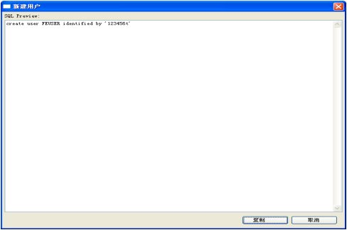
点击复制按钮可以复制该操作的SQL语句到剪切板。
创建用户成功后左侧节点增加该用户，如图：
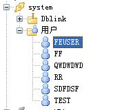
以“system”用户登录成功后，可提供查看用户视图功能，该功能可以查看当前连接下的所有的用户。查看用户视图有两个入口，可以双击“用户”节点，也可以右击“用户”节点选择弹出菜单。选中“用户”节点，右键单击弹出菜单，如图：
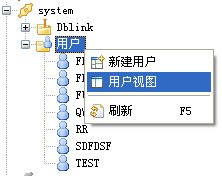
单击用户视图，该视图下展示的当前连接下的所有用户名称以及该用户所在的数据库名，如图：
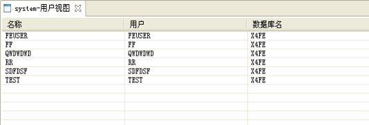
以“system”用户登录成功后，提供用户导航节点刷新功能，右键“用户”节点，点击刷新，执行刷新，用户节点将重新加载数据。如图：
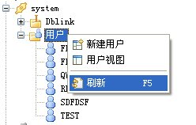
密码重置功能包括对systemadmin用户、system用户和普通用户的登录密码进行重置。
以“systemadmin”用户登录成功后，在已经连接成功的链接上右键弹出菜单，如图：
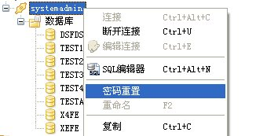
单击密码重置，出现如图所示的对话框：
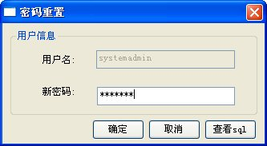
输入新的密码，单击确定按钮，成功修改密码。单击查看SQL按钮可以查看重置该用户密码的SQL语句，如下图：
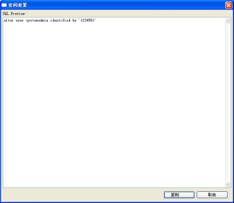
单击复制按钮可以复制该操作的SQL语句到剪切板。
以“system”用户登录成功后，在已经连接成功的链接上右键弹出菜单，如图：
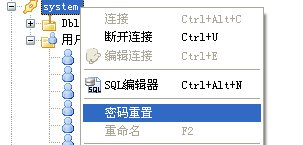
单击密码重置，出现如图所示的对话框：
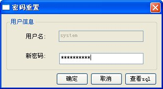
输入新的密码，单击确定按钮，成功修改密码。单击查看SQL按钮可以查看重置该用户密码的SQL语句，具体效果参照对systemadmin用户进行密码重置。
普通用户的密码重置有两个入口，一个是普通用户登录自己重置密码，另一个是system用户登录重置指定普通用户的密码。
普通用户登录成功后，在用户节点上右键弹出菜单，单击重置密码，如下图所示：
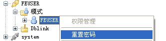
以“system”用户登录成功后，展开“用户”节点，右击需要密码重置的用户后弹出右键菜单，单击密码重置，如图所示：
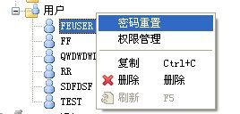
以上两种操作，出现如图所示的对话框：
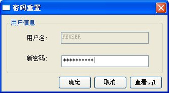
输入新的密码，单击确定按钮，成功修改密码。单击查看SQL按钮可以查看重置该用户密码的SQL语句，具体效果参照对systemadmin用户进行密码重置。
提供用户授权功能，将SCHEMA赋权给用户，可选择批量赋权模式。权限管理分为system用户对普通用户授权和具有授权权限的普通用户对其他用户授权两部分。
以“system”用户登录成功后，可以为普通用户进行权限管理。展开“用户”节点，右击需要授予或回收权限的用户后弹出右键菜单，如图所示：
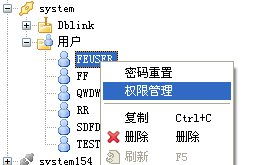
单击权限管理，弹出带有两个选项卡的窗口，可以对用户权限进行设置，权限包括：select,create,update,drop,insert,alter,truncate,delete八种，同时也可以对对象权限和系统权限进行设置。
编辑用户的用户权限和对象权限的选项卡如图所示的对话框：
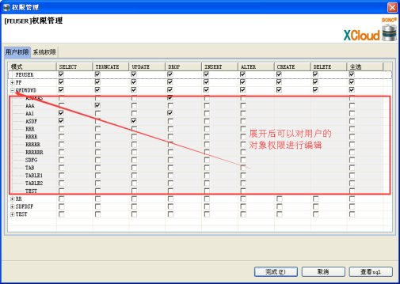
编辑用户具有的系统权限选项卡的对话框如下图：
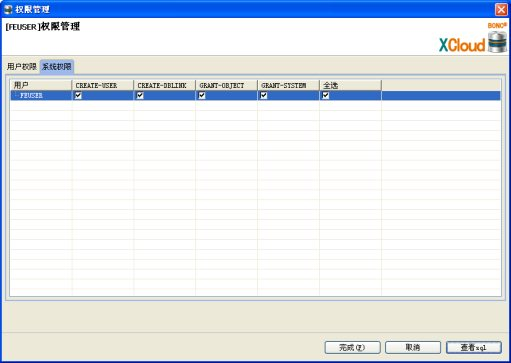
点击完成按钮可以对用户权限进行保存。单击查看SQL按钮可以查看保存用户权限的SQL语句。如下图：
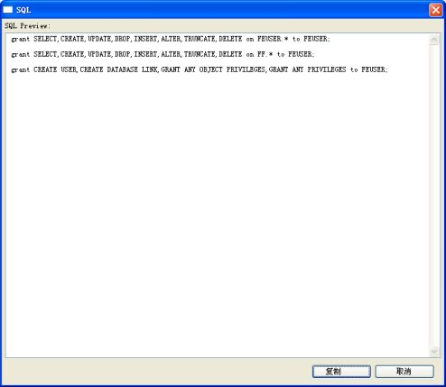
单击复制按钮可以复制执行该操作的SQL语句到剪切板。
以普通用户登录成功后，如果该用户具有可以给其他普通用户授权的权限，则该用户可以为普通用户进行权限管理。如果该用户不具有给其它普通用户授权的权限，可以以system用户登录后赋予该用户具有该权限。
以普通用户FEUSER为例，其具有给其他普通用户授权的权限，入口为右击对需要权限管理的用户。右击该登录用户，权限管理菜单不可用；右击其他用户，权限管理菜单可用。如下图:
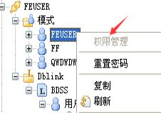 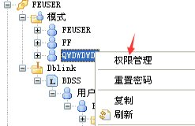
点击权限管理，弹出如下对话框：
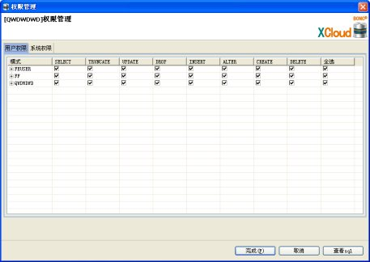
具体操作效果参考system用户下的用户授权。
以“system”用户登录成功后，提供删除用户功能，展开“用户”节点，右击需要删除的用户，如下图：
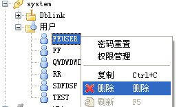
单击删除，弹出如图所示的对话框，点击确定删除用户成功。
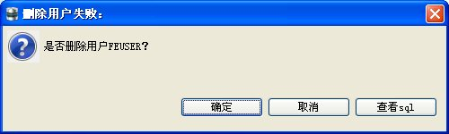
单击查看SQL，可以查看删除用户的SQL语句。
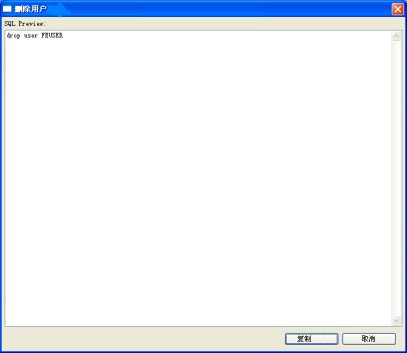
单击复制按钮可以可以复制SQL语句到剪切板。
用户删除成功后左侧树节点该用户消失。
以“system”用户登录成功后，提供进程组管理功能，右击选择进程组管理，如下图：
弹出如图所示的对话框，点击完成进程组授权成功。
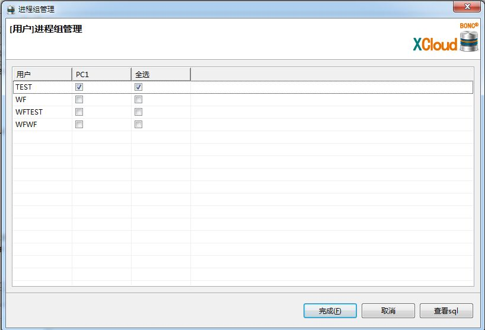
以“system”用户登录成功后，提供进程组管理功能，右击选择进程组管理，如下图：
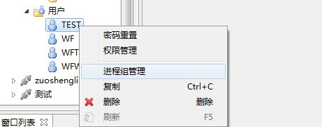
弹出如图所示的对话框，点击完成进程组授权成功。
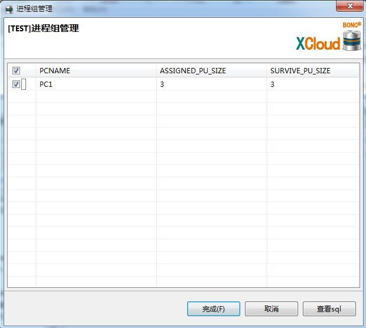